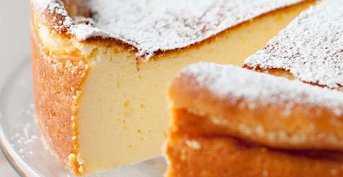

Sernik Tradycyjny
Składniki:
- 1 kg zmielonego twarogu
- 250 g miękkiego masła
- 1 i 1/3 szklanki cukru pudru
- 6 jajek
- 1 opakowanie cukru wanilinowego
- 150 ml śmietanki 36%
- 4 łyżki mąki ziemniaczanej
Przygotowanie:
- Miękkie masło ubić na puszysto, stopniowo dodawać po jednym żółtku na przemian z łyżką cukru pudru, cały czas dokładnie
ubijając składniki.
- Zmniejszyć obroty miksera do średnich, dodać zmielony ser i połączyć. Teraz dodawać po kolei: cukier wanilinowy,
śmietankę oraz mąkę ziemniaczaną cały czas miksując składniki na jednolitą masę. Na koniec wymieszać (delikatnie, ale
dokładnie) z ubitymi na sztywno białkami.
- Przygotować tortownicę o średnicy minimum 26 cm (mierzona od środka). Posmarować ją masłem i wysypać bułką tartą
lub mielonymi migdałami lub dno wyłożyć papierem do pieczenia.
- Masę serową wyłożyć do tortownicy i wstawić do piekarnika nagrzanego do 170 stopni C. Piec przez 60 minut. Sernik
studzić stopniowo wyjmując z piekarnika (najpierw po trochu otwierając drzwiczki i lekko wysuwając sernik, w końcu wyjąć
z piekarnika). Zrumieniony wierzch sernika posypać cukrem pudrem lub polać polewą czekoladową.
